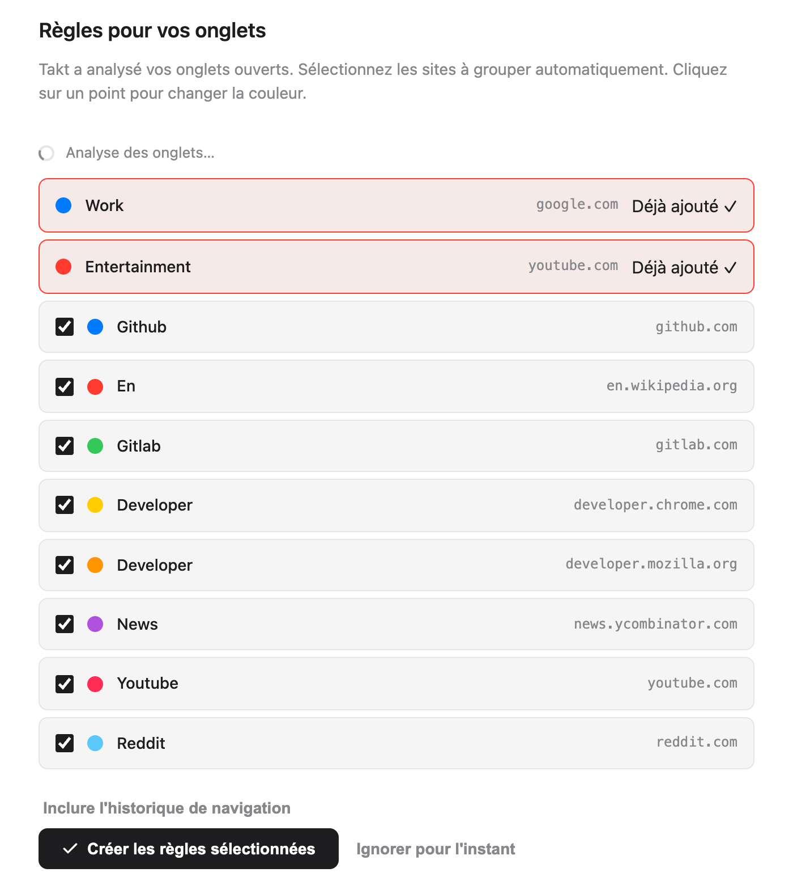
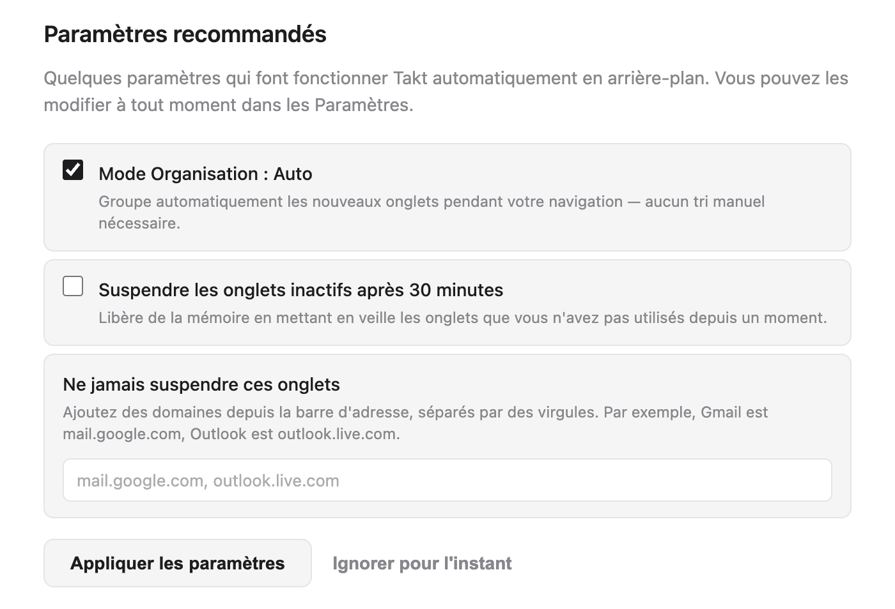
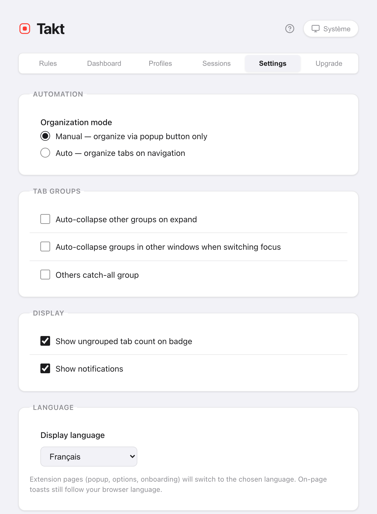

En bref : la page d'accueil fait la configuration à votre place.
- Elle liste les sites de vos onglets ouverts. Chaque site coché devient une règle.
- Takt regroupe vos onglets dès que les règles existent.
- Le popup regroupe les commandes du quotidien. La page d'options contient les règles, les paramètres et les plans.
- Aucun compte. Le plan Free comprend 5 règles.
Que se passe-t-il quand j'installe Takt ?
Installez Takt depuis le Chrome Web Store. Deux choses se produisent :
- Takt ajoute deux règles de départ : Work (google.com, bleu) et Entertainment (youtube.com, rouge).
- Une page d'accueil s'ouvre dans un nouvel onglet.
Épinglez Takt depuis le menu en forme de pièce de puzzle de Chrome pour avoir le popup à portée de clic.
Comment choisir mes premières règles ?
La page d'accueil analyse vos onglets ouverts et liste les 8 sites que vous avez le plus ouverts. Les deux règles de départ figurent en haut, marquées Déjà ajouté.
- Décochez les sites que vous ne voulez pas regrouper. Tous les sites sont cochés au départ.
- Cliquez sur une pastille de couleur pour faire défiler les 8 couleurs de groupe de Chrome.
- Cliquez sur Créer les règles sélectionnées.
Takt crée les règles et regroupe aussitôt vos onglets ouverts. La page affiche le résultat, par exemple « 12 onglets regroupés en 4 groupes. »
Avec le plan Free, les deux règles de départ comptent dans la limite de 5 règles. Il reste donc de la place pour 3. Takt garde les 3 premiers sites cochés et vous indique combien il en a laissé de côté. Si vous tenez à choisir ces 3 sites, décochez les autres avant.

Faut-il laisser Takt analyser mon historique de navigation ?
C'est facultatif. Cliquez sur Inclure l'historique de navigation et Chrome vous demande l'autorisation d'accéder à l'historique. Si vous l'accordez, Takt ajoute au décompte vos visites des 7 derniers jours, pondérées selon la fréquence de chaque site, puis reconstruit la liste.
Le décompte se fait dans votre navigateur. Rien n'est envoyé nulle part. Si vous passez cette étape, les suggestions viennent uniquement de vos onglets ouverts.
Quels paramètres recommandés garder ?
| Paramètre | Sur la page d'accueil | Effet |
|---|---|---|
| Mode Organisation : Auto | Coché | Les nouveaux onglets sont regroupés pendant leur chargement. Décoché (Manuel), Takt ne regroupe que lorsque vous cliquez sur Regrouper les onglets. |
| Suspendre les onglets inactifs après 30 minutes | Décoché | Décharge les onglets inactifs depuis 30 minutes pour libérer de la mémoire. Ils restent dans la barre d'onglets. |
| Ne jamais suspendre ces onglets | Vide | Domaines jamais déchargés, par exemple mail.google.com. |
Cliquez sur Appliquer les paramètres ou sur Terminer : Takt enregistre les cases exactement comme elles sont cochées. Vous pourrez modifier ces trois réglages plus tard dans Settings.

Deux autres sections peuvent apparaître. Si l'IA locale de Chrome n'est pas disponible, un bouton ouvre les paramètres d'IA de Chrome, et la page vérifie à nouveau à votre retour. La page présente aussi Quick Switch (Alt+Shift+Space), une fonctionnalité Premium.
Puis-je revoir la page d'accueil ?
Oui. Ouvrez la page d'options, allez dans Settings → Support & Feedback et cliquez sur Replay welcome tour. La page analyse de nouveau vos onglets : vous pouvez ainsi ajouter des règles pour les sites que vous utilisez depuis.
Quel mode de regroupement choisir ?
Ouvrez le popup. Le volet Accueil comporte un sélecteur Mode de regroupement à quatre options :
| Mode | Choisissez-le si |
|---|---|
| Par règles (par défaut) | Vous voulez retrouver les mêmes sites dans le même groupe nommé, à chaque fois. |
| Par catégorie | Vous ne voulez pas écrire de règles. 20 catégories fixes, comme Development et News. |
| Par IA | Vous voulez des groupes par sujet. Le modèle local de Chrome leur donne un nom. |
| Aucun | Vous voulez la prévention des doublons et les autres outils, mais pas de regroupement. |
Les modes Catégorie et IA sont gratuits jusqu'à 5 groupes. Les détails sont dans regrouper les onglets par catégorie ou par IA.
Comment écrire ma propre règle ?
Cliquez sur l'icône d'engrenage du popup pour ouvrir la page d'options. Dans Rules, cliquez sur New Rule, ajoutez une condition comme URL · Domain · github.com, nommez le groupe, choisissez une couleur et enregistrez. Le guide complet : comment regrouper automatiquement les onglets dans Chrome.
Où se trouve chaque chose dans Takt ?
Le popup sert au quotidien. Il compte six volets :
| Volet du popup | Contenu |
|---|---|
| Accueil | La règle qui correspond à l'onglet actif, le mode de regroupement, les actions rapides comme Regrouper les onglets et Réduire tout |
| Règles | Toutes les règles, et un lien pour les gérer |
| Sessions | Espaces de travail enregistrés Premium |
| Veille | Les onglets que vous avez mis en veille, prêts à être réactivés |
| Suggestions | Des suggestions de règles d'après les sites que vous utilisez beaucoup |
| Tabs | Tous les onglets ouverts, par groupe, avec un champ de recherche |

La page d'options sert à la configuration. Ses onglets sont Rules, Dashboard (mémoire par onglet et par groupe, Premium), Profiles (Premium), Sessions (Premium), Settings et Upgrade.
Comment changer la langue ou le thème de Takt ?
Langue. Allez dans Settings → Language → Display language. Choisissez English, Français, Español, Italiano, Deutsch ou Português, ou Use browser default. Ce choix ne dépend pas de la langue de Chrome. Le popup, la page d'options et la page d'accueil changent de langue ; la page se recharge pour l'appliquer. Les petites notifications que Takt affiche dans les pages web suivent toujours la langue de Chrome.
Thème. Cliquez sur le bouton de thème dans l'en-tête du popup ou de la page d'options. Il alterne entre Système, Clair et Sombre. Système suit votre système d'exploitation. Les deux choix sont enregistrés avec vos autres paramètres.

Ce que la configuration ne fait pas
- Les suggestions se font site par site. La page d'accueil crée une règle de domaine par site. Pour des motifs comme « toutes les pull requests », écrivez vous-même des règles glob ou regex (Premium).
- En mode Par règles, les sites inconnus restent hors groupe. Ajoutez une règle, ou passez au mode Catégorie ou IA.
- Le plan Free s'arrête à 5 règles. Voir ce que comprennent Free et Premium.
Deux minutes entre l'installation et des onglets regroupés.
Ajouter Takt à Chrome, gratuitementQuestions fréquentes
Takt est-il gratuit ?
Oui. Le plan Free comprend 5 règles, le regroupement par catégorie et par IA jusqu'à 5 groupes, la prévention des doublons, la suspension automatique et les actions rapides du popup. Premium coûte 3 $/mois ou 30 $/an.
Faut-il un compte pour utiliser Takt ?
Non. Takt n'a pas de compte. Vos règles et vos paramètres sont stockés dans Chrome. Voir ce que Takt fait de vos données.
Comment rouvrir la page d'accueil ?
Page d'options → Settings → Support & Feedback → Replay welcome tour.
Takt peut-il s'afficher dans une autre langue que Chrome ?
Oui. Dans Settings → Language, choisissez l'une des 6 langues. Le popup, la page d'options et la page d'accueil changent de langue ; les notifications affichées dans les pages web suivent toujours la langue de Chrome.